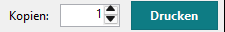
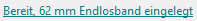

Das Bild auf der Zeichenfläche ist der Druck: Der QL Label Maker rechnet das Etikett in die schwarzen Punkte des Druckers um und schickt genau diese Punkte.
-
Kopien und Drucken
Bei Kopien die Anzahl der Etiketten einstellen, dann auf Drucken klicken. Gedruckt wird auf dem Drucker, der oben bei Drucker steht.

-
Die eingelegte Rolle
Vor dem Druck fragt der QL Label Maker den Drucker, welche Rolle eingelegt ist: an USB und im Netzwerk immer, einen freigegebenen Drucker, wenn auf dem PC mit dem Drucker der Druckerstatus-Dienst läuft. Zuerst gezeigt werden:
- ein Fehler am Drucker,
- eine Rolle, die nicht zum Etikett passt (der Drucker würde sonst mit roter Lampe anhalten),
- ein Drucker, der auf „Drucker offline verwenden“ steht; der QL Label Maker bietet an, ihn wieder online zu schalten.
Hat ein Code auf dem Etikett einen Fehler, fragt der QL Label Maker vorher ebenfalls nach, siehe Barcodes und QR-Codes.
Unten in der Statusleiste steht, was eingelegt ist. Ein Klick darauf fragt den Drucker erneut, ebenso Drucker > Eingelegte Rolle prüfen.

Mehr über den Drucker zeigt Drucker > Druckerstatus. Drucker > Bei Druckerfehlern benachrichtigen zeigt eine Windows-Benachrichtigung, wenn ein QL-Drucker stehen bleibt (mehr), und Drucker > Druckereinrichtung fügt QL-Drucker hinzu, gibt sie frei und entfernt sie (Druckereinrichtung).
Tipp: Drucken Sie Etiketten deshalb am besten mit dem QL Label Maker. Passt ein Etikett nicht zur Rolle, sagt er das, bevor er es schickt. So bleibt der Drucker nicht im Fehler stehen (dann hilft nur, die Rollenabdeckung zu öffnen und zu schließen). Das ist besonders praktisch, wenn der Drucker im Netzwerk oder an einem anderen PC steht. Word und andere Programme drucken auch, aber ohne diese Prüfung.
-
300 × 600 dpi
Doppelt so viele Punkte entlang des Etiketts: schärferer Text, langsamerer Druck. Sie schalten das rechts bei Auflösung ein, solange nichts ausgewählt ist, oder im Menü Drucker > 300 × 600 dpi (schärfer, langsamer). Ein neues Etikett beginnt mit der Einstellung des Druckers.
-
Was nicht gedruckt wird
- schraffierte Flächen: Dort kann der Drucker nicht drucken,
- Teile von Objekten außerhalb des Etiketts,
- der helle Rand um einen ausgewählten Code (die Ruhezone).